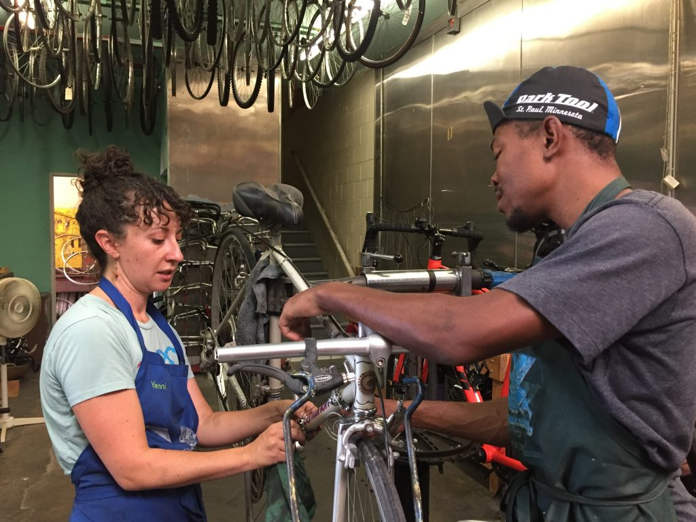
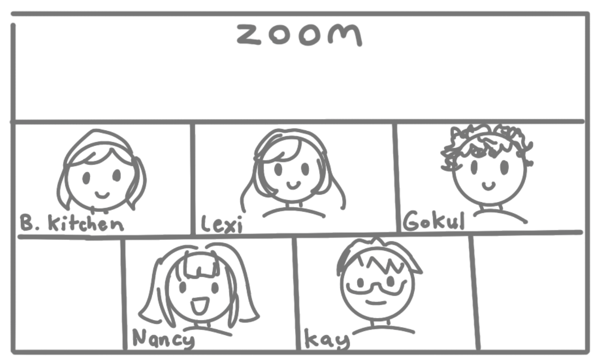
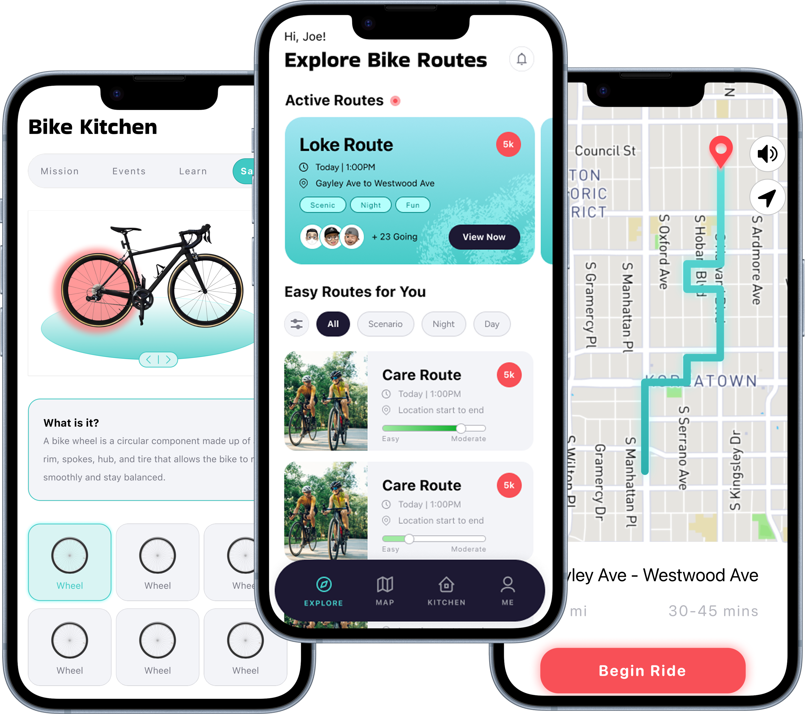
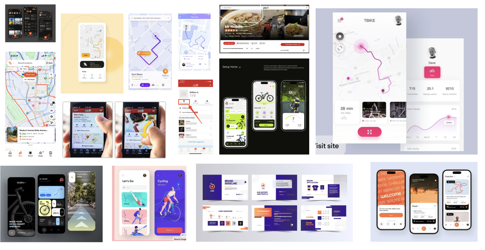
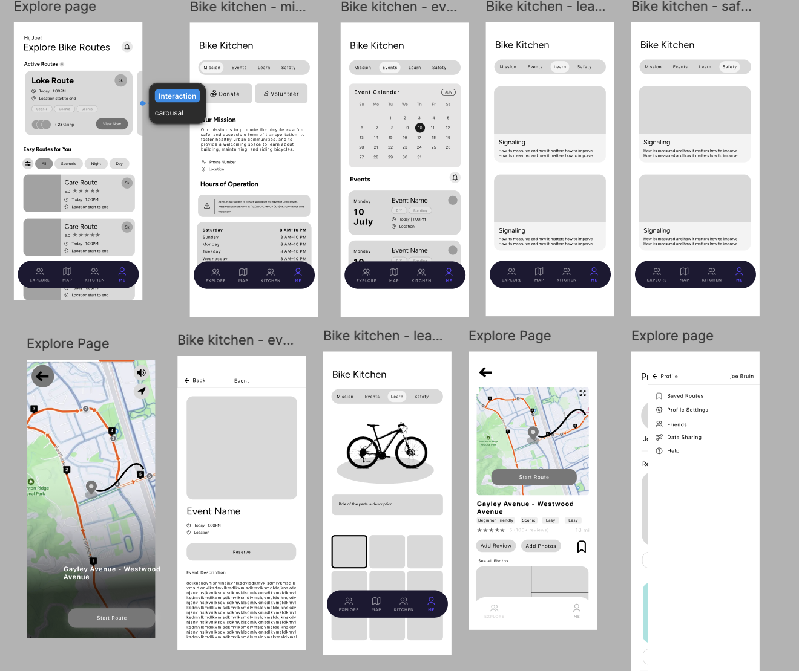
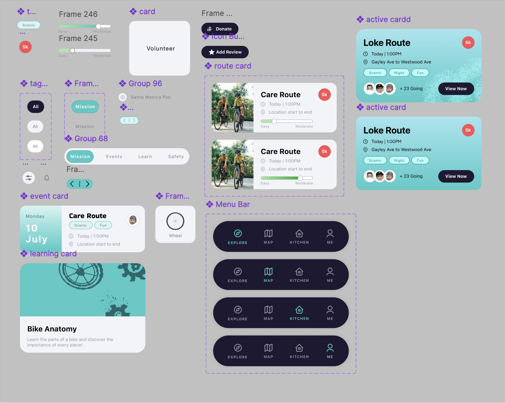
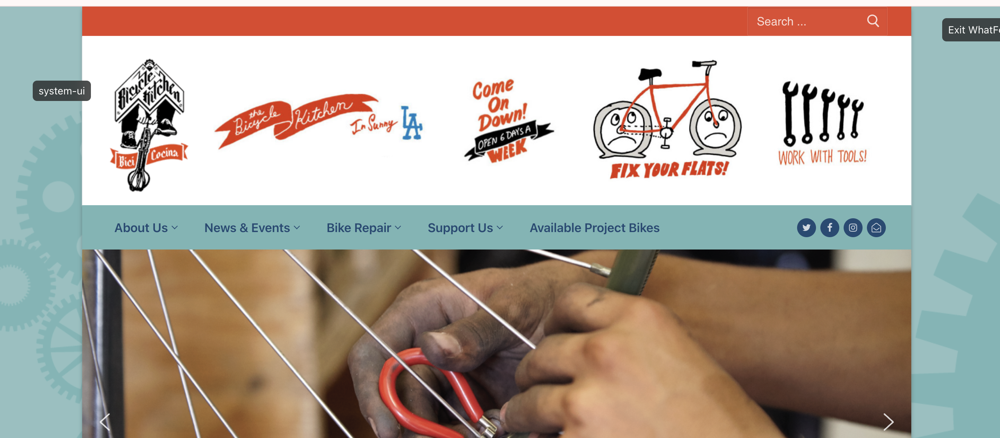
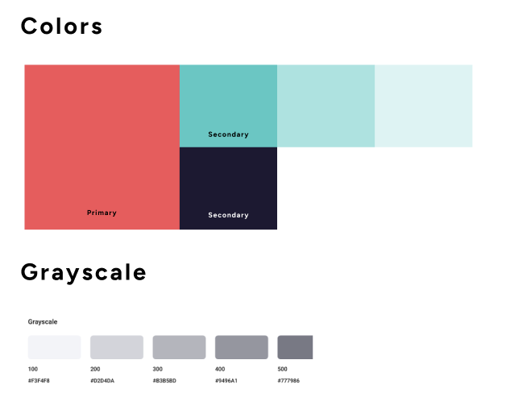
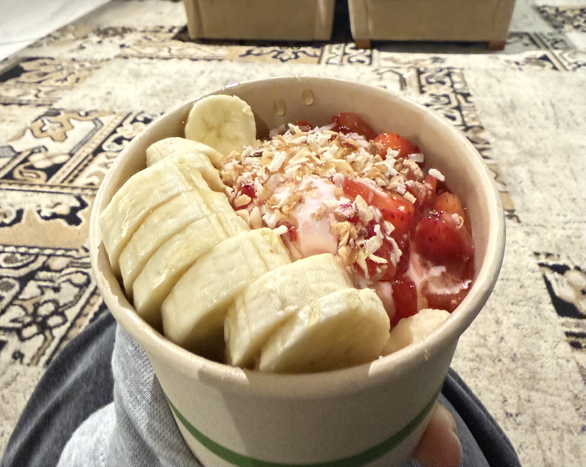

Bike Pantry
A community and safety oriented bicycle app built for The Bike Kitchen nonprofit. 1st place @ Hack2Impact 2026
Overview
In the annual Hack2Impact Hackathon hosted by LA Blueprint, a UCLA club, my team of 4 built a full stack application for Bicycle Kitchen, an LA Non-Profit that aims to promote bike safety and education. Our team placed 1st in the competition with our app, Bike Pantry.
What is The Bicycle Kitchen?
The Bicycle Kitchen is a volunteer-run nonprofit in Los Angeles that teaches people to repair their own bikes rather than fixing bikes for them.
Its mission: promote biking as fun, safe, accessible transportation, and foster healthy communities through a welcoming space to learn.

In Summary, Bicycle Kitchen is...
The Bicycle Kitchen needed a safety tool.
The Bicycle Kitchen came to us with a clear need: a tool to help cyclists navigate traffic, find safe routes, and build the confidence to actually ride in the city.
Los Angeles is built around the car
Since none of us were regular bikers, I researched bike transportation and safety in Los Angeles. I dug through forums and articles and found an overarching theme: new cyclists feel uncertain and intimidated riding because LA roads are not built with cyclists in mind.
La traffic. There usually aren't musical numbers on the 405 unfortunately :(
Some Statistics I found...
SF: 62%
NY: 35%
SF: 24%
NY: 30%
Learning what LA bikers need through a client interview
Meeting with Bicycle Kitchen Representative

Our group then decided to organize a client interview to further understand what LA bikers actually need from our product and help define the scope and essential features of our solution.
Here's what they said:
- Some roads are wide and seem like they would be great for biking (ex. Venice Blvd) but have many potholes.
- A lot of streets have bike lanes that randomly disappear.
- They want the tool to be approachable and easy to navigate for someone just getting started.
From our research I discovered...
A vicious cycle for LA cyclists
While most of LA isn't bicycle-friendly, experienced cyclists, like those at Bicycle Kitchen, have found their way through it. The challenge is that these safe routes are invisible to beginners.
Our goal: Connect beginners with the knowledge of experienced bikers, so they can navigate LA with confidence
A Navigation App, Purpose-Built for Cyclists
To help new bikers feel less afraid of riding in LA, we built Bike Pantry, an app that combines safer navigation, community, and education. It's organized into these three main features:
Navigation
Current navigation tools usually optimize for speed rather than safety. So, our team developed a safety first navigation algorithm
Community
Frequent bikers already know the best ways to get around LA. So, we connect beginners with the experienced.
Education
Bicycle Kitchen’s mission is helping riders feel confident. So, we included cycling safety lessons and connected users back to Bicycle Kitchen

Visual design Exploration
We began by creating a mood board of other popular apps with map interfaces. We took inspiration from familiar apps like Strava.

Our Moodboard
Lo-Fi and custom components
We then moved on to rapidly iterate on Low-Fidelity Designs, making sure to collect anything we could turn into a repeatable component.

Low-Fidelity Designs

Components (High Fidelity)
Hi-Fi exploration
For the colors in our High-Fidelity Designs we were inspired by the official Bicycle Kitchen website and adapted them for improved mobile readability.


Smart Map
Select a destination and the map automatically calculates the quickest, safest, route to get there. Its algorithm takes in live publicly reported data from the LA transit system such as pothole locations and traffic so information is updated and accurate.
Find community through exploring routes
This page lets users...
- Join active routes where users can plan to meet at a certain time and bike on a route together.
- Discover safe routes around Los Angeles: Search through routes submitted by other users and choose tags that fit your biking needs
Kitchen
Connect back to Bicycle Kitchen with their mission, an event calendar, education, and safety lessons
Profile
Users can post routes, see their photos from reviews, and configure their settings
Results and Reflection

2AM UCLA strawberry froyo - the only picture I have from the Hackathon :D
After our final presentation, the Bicycle Kitchen representatives were very excited about our solution!
One judge pointed out how there may be accessibility issues for users with color blindness, or when under harsh light. This has stuck with me and continues to influence my design decisions.
One of my favorite parts of this project was learning about a community I never would have encountered otherwise which is one of the main things I love most about design. It gives you a reason to step into someone else's experience and actually understand it. Time to go for a bike ride!
Huge thanks to Gokul, Nancy, and Kay for being such an amazing team, as well as Hack2Impact for the fun event!